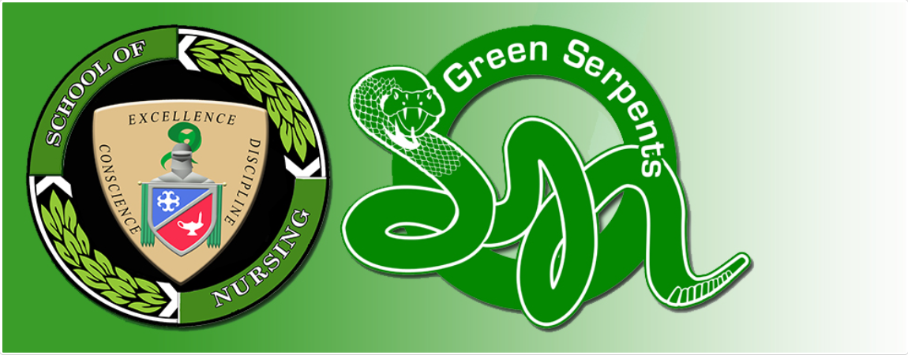

School of Nursing
Philosophy and Objectives
About the Office
The School of Nursing is the arm of the Colegio that manages BS Nursing program.
VISION
The School of Nursing of Colegio de San Juan de Letran Calamba envisions itself as a CENTER of Excellence in nursing education, research, practice, and service.
MISSION
The School of Nursing of Colegio de San Juan de Letran Calamba commits to enhance the quality of life of individuals, families, and diverse communities locally and globally by upholding the culture of conscience, discipline and excellence in nursing education, research, practice and service.
QUALITY OBJECTIVES
- To form conscientious, disciplined, and excellent students and graduates through Dominican programs which are quality focused, industry aligned, competency based, and glocally competitive.
- To sustain the academic program's high standards of quality, excellence, and relevance to promote the Colegio as one of the nationally and internationally recognized institutions.
- To continually prepare and improve the administrators, faculty members, and staff to deliver quality instruction and support services that will contribute to the delivery of programs.